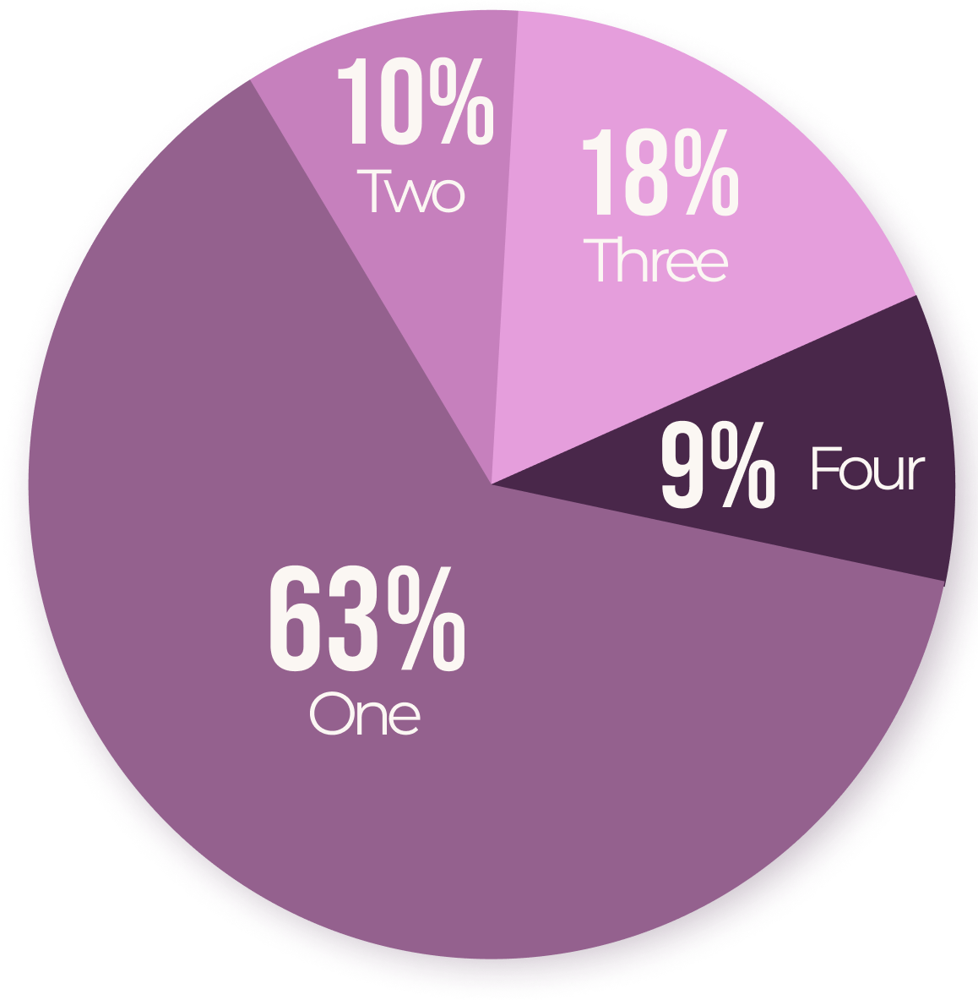
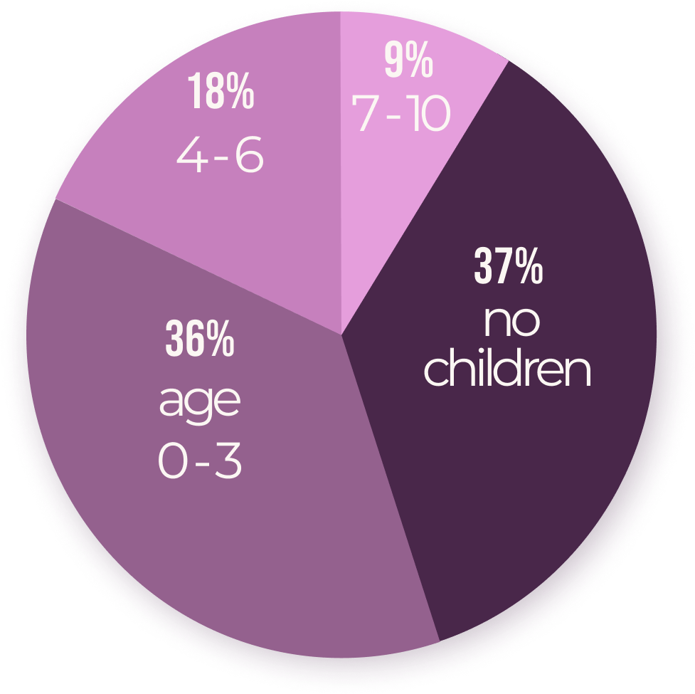

Non-Profit Website Redesign
Case Study
Non-profit: Farm Animal Rescue of Maine
Designer: Sam Lynch
Product
The Farm Animal Rescue of Maine is a non-profit animal rescue and sanctuary. They are dedicated to providing a stable and loving environment to a variety of farm animals. The rescue is funded by donations, community events and children’s camps.
Challenge
The Farm Animal Rescue of Maine's website is outdated and disorganized. In order the help generate visitors and donations, it needed to be redesigned to better suit users.
Solution
Lorum ipsum
Brief
Project Type
Group (4)
My Role
UX Researcher, UX/UI Designer, Prototyper
Tools
Figma, Adobe XD, Miro, Illustrator, Photoshop
Timeline
3 Weeks
Roadmap
Research
User Survey
We sent out a survey asking participants about experience visiting a farm or animal rescue. We received 26 responses, and were able to collect quanatative data to create our user persona.
The majority of farm visitors have young children
63% of users reported they decided to visit the farm of the first website they view.
100% of users surveyed visited 4 or fewer websites before deciding to visit a farm.
Users are quick to decide
How many websites did you visit before deciding upon a farm to visit?
64% of users visited a farm or animal sanctuary in the last 6 months with children. 54% with children under the age of 6.
Heuristic Evaluation
An evaluation was run on the run on the Forest Service website using Nielsen’s 10 general principles for interaction design.
Issues to Solve First
- Inconsistent fonts and sizes
- Black and white color palette
- No system status
- Inconsistent whitespace
- Crowded navigation
- No calls to action
User Persona
User Scenario
A user scenario was created to visualize how our persona may interact with the F.A.R.M website.
Design
Sitemap Redesign
Lo-Fidelity Wireframes
Low-fidelity wireframes were created by each team member based on the updated sitemap.
Styleguide
Hi-Fidelity Wireframes
Using the style guide and assets from the F.A.R.M website, we created high-fidelity wireframes of all pages on the site. I was responsible for the camp pages, and camp sign up modules.
Prototypes
As a group we connected all of the pages and navigation in adobe XD to create clickable prototypes for mobile and desktop.


Conclusion
What We Learned
The importance of a style guide while collaborating with a group.
- As a result, I focused my time on putting together a style guide for the group in AdobeXD. Using components for buttons, and styles for font/colors, we were able to produce cohesive designs for our next iterations of wireframes.
Teamwork and Collaboration
- Maintaining an agile workflow to keep track of source files and manage weekly design sprints.
- Because our group was designing several different pages on a tight deadline, we met multiple times a week to review and critique each other's designs.
THANK YOU
For reading my case study